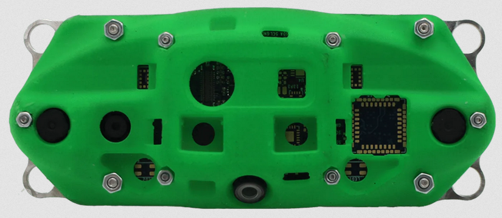
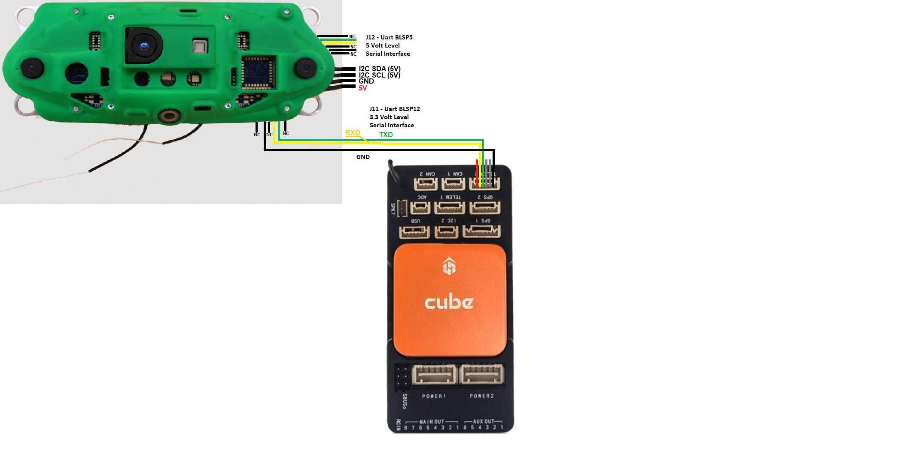

ModalAI VOXL¶
[copywiki destination=”copter,rover,blimp”]
{kind=link}
This article explains how to setup a ModalAI VOXL-CAM for use with ArduPilot as a substitude for a GPS allowing position control modes like Loiter, PosHold, RTL, Auto to work.
Other versions of the VOXL cameras should also work except for the VOXL2 which is not yet supported.
Note
VOXL camera support is available in ArduPilot 4.3 (and higher).
What to Buy¶
Optionally an 8GB or larger SD Card
Hardware Setup¶
{kind=link}
Connect the VOXL camera to the autopilot as shown above. In these instructions the autopilot’s Telem2 port is used.
Mount the VOXL camera on the front of the vehicle oriented so that the wifi antennas extend from the bottom of the camera
VOXL Camera Configuration¶
ModalAI’s VOX-CAM setup instructions here
The minimum steps to get the camera working include
Setup adb on an Ubuntu workstation
Connect the camera to the Ubuntu workstation, start and adb shell and run voxl-configure-vision-px4 (Note: you may simply press <enter> when asked for an IP address)
run “systemctl enable voxl-mavlink-server” to configure the mavlink server to start automatically
Optionally run “systemctl status voxl-vision-px4” to check if VOXL is producing good position estimates
Autopilot Configuration¶
Connect to the autopilot with a ground station (i.e. Mission Planner) and check that the following parameters are set:
SERIAL2_PROTOCOL = 2 (MAVLink2). Note this assumes the camera is connected to the autopilot’s “Telem2” port.
SERIAL2_BAUD = 921 (921600 baud)
Optionally set SERIAL2_OPTIONS = 1024 (Don’t forward mavlink to/from) to disable the camera’s odometry messages from being sent to the GCS
VISO_TYPE = 3 (VOXL)
Set VISO_POS_X, VISO_POS_Y, VISO_POS_Z to the camera’s position on the drone relative to the center-of-gravity. See sensor position offset compensation for more details
If only the VOXL camera will be used for position estimation and heading (e.g. No GPS):
EK3_SRC1_POSXY = 6 (ExternalNav)
EK3_SRC1_VELXY = 6 (ExternalNav)
EK3_SRC1_POSZ = 6 (ExternalNav)
EK3_SRC1_VELZ = 6 (ExternalNav)
EK3_SRC1_YAW = 6 (ExternalNav)
After the parameters are modified, reboot the autopilot. Connect with the ground station and (if using Mission Planner) right-mouse-button-click on the map, select “Set Home Here”, “Set EKF Origin Here” to tell ArduPilot where the vehicle is and it should instantly appear on the map.
For indoor/outdoor transitions (e.g. VOXL camera indoors, GPS+Compass outdoors):
EK3_SRC1_POSXY = 3 (GPS)
EK3_SRC1_VELXY = 3 (GPS)
EK3_SRC1_POSZ = 1 (Baro)
EK3_SRC1_VELZ = 0 (None)
EK3_SRC1_YAW = 1 (Compass)
EK3_SRC2_POSXY = 6 (ExternalNav)
EK3_SRC2_VELXY = 6 (ExternalNav)
EK3_SRC2_POSZ = 6 (ExternalNav)
EK3_SRC2_VELZ = 6 (ExternalNav)
EK3_SRC2_YAW = 6 (ExternalNav)
RC6_OPTION = 90 (EKF Pos Source) to allow the pilot to use channel 6 to switch between Source1 (e.g. GPS+Compass) and Source2 (e.g. VOXL camera). The switch’s low position is Source1 (GPS+Compass), middle position is Source2 (e.g. VOXL), and high position is Source3 (e.g. None) which will lead to the EKF losing its position estimate and triggering an EKF failsafe. To avoid pilot error triggering an EKF failsafe you may wish to copy EK3_SRC1_xxx or EK2_SRC2_xxx to EK3_SRC3_xx.
RC7_OPTION = 80 (Viso Align) to allow the pilot to use channel 7 to re-align the camera’s yaw with the AHRS/EKF yaw before flight. Re-aligning yaw before takeoff is a good idea or loss of position control (aka “toilet bowling”) may occur.
After the parameters are modified, reboot the autopilot.
More details on GPS/Non-GPS Transitions can be found here